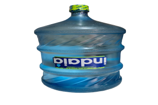
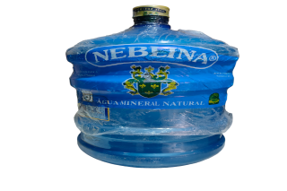
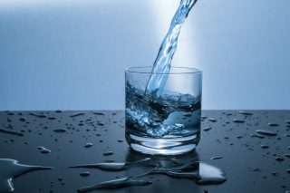
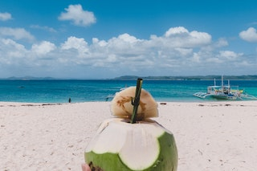
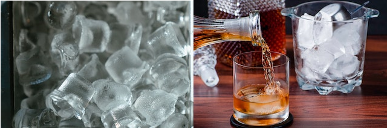
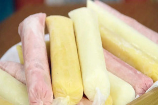

Informações sobre os produtos.
Cristal
É um garrafão feito com material de acrílico. Possui quatro anéis de proteção com texturização especial que aumentam a resistência e reduzem as áreas de atrito do garrafão na estocagem e no transporte. Possui fundo plano, oque o torna mais fácil quebrar ao entrar em contato com uma superfície com elevações. O garrafão cristal é mais frágil que o pet, sendo um garrafão mais difícil de ser encontrado, pois muitos distribuidores procuram evitar trabalhar com esse tipo de garrafão por sua fragidade. A detentora da tecnologia do garrafão cristal é a Índaia. Somente a Índaia pode vender e distribuir os garrafões cristal.
Pet
É um garrafão feito com o mesmo material que as garrafas de refrigerantes pet. Possui quatro anéis de proteção com texturização especial que aumentam a resistência e reduzem as áreas de atrito do garrafão na estocagem e no transporte. Possui fundo texturizado para maior proteção, em caso de deslizamento, ou em caso de contato com alguma superfície com elevações. O garrafão pet é mais resistente, com maior vida útil do que o cristal, sendo um garrafão mais fácil de ser encontrado.
Mineral x Adicionada de sais
Água mineral: É a água retirada da fonte e envasada, e os únicos tratamentos que ela pode receber é a filtração ou a decantação ( e a adição de gás, se for o caso). Portanto, os sais minerais que essa água possui vieram naturalmente da fonte de onde ela foi obtida.
Água adiconada de sais: É a água potável, de torneira, tratada através de diversos mecanismos (filtração, flocação, adição de fluor, cloro, etc) e que, no final, é adicionado artificialmente alguns sais minerais, para deixá-la mais parecida com a água mineral.
Água de coco
Bebida natural diurética e livre de gorduras, a água de coco tem alto poder de hidratação, poucas calorias e muitos nutrientes. Considerada um isotônico natural a bebida é rica em antioxidantes, sódio, potássio, fósforo, cálcio, magnésio e vitaminas C e do complexo B.
Gelo
O mais tradicional e mais simples de usar, o gelo em cubo pode ser usado em qualquer tipo de bebida e preparo (misturar ou agitar). Ideal para bebidas quentes como whisky entre outros.
Dindin - produtos
Nosso suco de fruta congelado em saco plástico, carinhosamente conhecido como dindin em nossa região, é preparado com amor e dedicação exclusivamente para nossos clientes. Com uma ampla variedade de sabores irresistíveis, convidamos você a vir conferir e desfrutar dessa delícia refrescante.